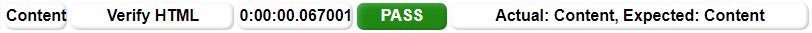
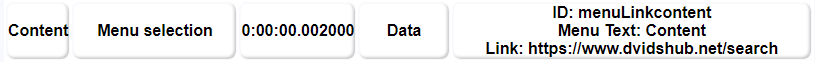
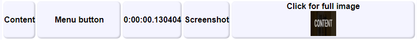
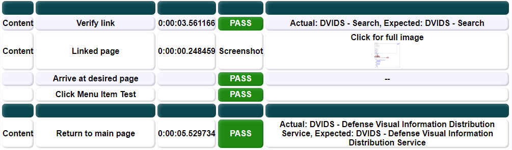

Every Robot Framework script has required headers that define key portions of the script. As shown in the table below, these are (mostly) common for .robot and .resource files. Note that Test Cases do not exist in .resource files. Note also that resource files inherit from each other and .robot files can inherit from .resource whiles. That means that if you define a setting, variable, or keyword in some .resource file and then import that resource file in another script, you automatically get everything that was previously defined.
| Header | Robot | Resource |
|---|---|---|
*** Settings *** | ✔ | ✔ |
*** Variables *** | ✔ | ✔ |
*** Keywords *** | ✔ | ✔ |
*** Test Cases *** | ✔ | ✘ |
By default, all python scripts are supposed to be stateless with functions/keywords that are defined for a single operation. Stateless means that it doesn't hold any information whether you did the task one time or a hundred. Python also allows you to create objects and these objects can have state. Even so, the Robot Framework script takes each test case separately, including any object that is created during the test. If an object is initialized and used in test case #1, then it is destroyed and must be recreated for test case #2.
*** Test Cases ***
Do Something
Take Action and indidentally create object X Alpha #creates the object X with the name 'Alpha'
x.Print #this would print 'Alpha'
# here the object x is destroyed and the memory of 'Alpha' is lost
Do Something Else
#x.Print #this would fail and create an error because there is no object x
Take Action and indidentally create object X Beta #creates a new object X with the name 'Beta'
x.Print #this would print 'Beta'
That is the default behavior, but you may also want to keep some object for several test cases. To do that,
add one line to the Python file which will alter the scope of the object in RF. This is one of the options
and it makes the object "live" throughout the whole of one test script. Additional details, including links
to the relevant RF documentation, can be found here
ROBOT_LIBRARY_SCOPE = 'SUITE'
Robot test scripts and the keywords developed in those scripts are one-and-done. They exist in that script but they are not accessible elsewhere. For reasons that do not require full explanation here, simply copying and pasting keywords between files is NOT the preferred means of replicating keywords. Also prefer a resource file as the location for anything which might be reused. Keywords created for one script should be reviewed and exported to the resource file as soon as the test script is functional. Once a test script is complete, go through and justify why any keyword exists in that test script rather than a resource file. If there is no or little justification, it needs to move.
There is a story used in refactoring circles to describe how one deals with a lack of knowledge when developing a script. The first time you are faced with a task you treat it as a monster that you just need to slay this once. In many cases you will be right. When you are faced with the second monster, you grit your teeth and do it again, hoping that this time is the last. If you ever come upon the third monster, now is the time to refactor.
As with writing code, test scripts often have this kind of similarity. The naive approach is to write a new .robot file for every test and then each test can be run independently in all its glory. Unfortunately, this approach leads to a lot of redundancy, and version skew over time. Consider that you might build the first test early on and before you have fully developed the OQE reporting requirements. When the second test is built, you now have all the OQE requirements and you add them without altering the first test. By the time the third test is built you are also exportin all your logs to a central location and you include that in the third test script without updating the first two.
These problems can partially be solved by exporting most keywords to a resource file. If the function already exists in a resource file and you add OQE reporting to it, that OQE will now be reported for both tests. If you add logging, that too will be in all three scripts. Most importantly, the test script themselves will look very similar and prepared for DDT. This will help you as you try to combine them.
In order to compare and contrast any three scripts, it is easiest line them up side by side. As you do, look for things that are missing from or found only in one script of the three. Adjust the spacing between the lines of the other scripts to compensate for the extra or missing pieces. If you have exported all your keywords to a .resource file, the only differences may be parameters (a most ideal state), but you may have to ask questions about any anomalies. If something is only found in one place, was that a unique requirement OR should it have appeared in all? Maybe it should be replicated across all test cases. In handling these questions, it is helpful to have expert testers on hand. Even so, the answer may be "just automate the test as it is". That often occurs when any test procedure is the outgrowth of many hundreds of man hours and the specific knowledge may no longer exist.
Once the scripts have been properly compared, it should be possible to build a single script that allows for all variations. This approach is called Data Driven Testing or DDT. DDT is the efficient way to build new tests or add functionality to old tests. While building new tests, watch for the three monsters and then combine them into a single DDT test as often as possible.
According to Lehman's fifth law of software evolution, maintaining familiarity with any set of scripts is an ongoing challenge. Combining scripts in this manner helps to reduce the knowledge requirements in some ways, but makes further demands in others. In order to identify the three monsters, you must first be familiar with them. And once you have combined the three into one, you won't benefit unless you can recognize the fourth, fifth, and so on. You have to know that a DDT test exists and that you can take advantage of it. For this reason it is sometimes required that you review the whole set of test scripts looking for inefficiencies and resolving discrepencies. This is common to all code development--including test scripts.
Testers have been trained to minimize costs and especially to avoid duplicative effort. Therefore it may seem inconsistent that any test cases would have duplicate steps and yet they do. Consider that, at the lowest level, we reuse the keywords for things like finding a button, reading text, reporting data, etc. Slightly above that level there are certain sequences of steps that are used to set up the test. For example, setting up the simulated test data, arranging the system to automatically deal with the simulated event, and then kicking it all off might be common between many tests even though the details of the individual tests vary widely.
We have found that testers, tend to look at each line of a test as completely distinct for two reasons:
Consider the example bellow. Two sentences out of a manual test procedure that verify two different aspects of a telephone exchange system. Obviously these are different requirements, the first pertaining to returning a call and the second related to call forwarding. Note however, that aside from the key portions highlighted in color, the rest of the script is identical. First isolate what is different about each test case and then one can remake the tests for Data Driven Testing (DDT).
Lift the receiver, dial *69, wait for the automatic reply. Hang up the phone. ... Lift the receiver, dial *72, wait for the ring tone, dial the number. Hang up the phone.
Continuing with the previous example, let's build a single test script that handles both cases. To do that we need to isolate the common portions, and parameterize the differences. Consider the line below which uses the same colors. Here we can see that there are distinct actions and there is variation in only some of them.
| Start Call | Number | Wait until | Response | Action | End Call |
|---|
In this version of the script we can see the differences between the two requirements as a set of distinct parameters. In Robot Framework, these are called Arguments, but it means the same thing. They are various values that can be put into a test at key points. Here we have a variable for the number we want to dial, the response we are looking for, and the action (if any) that we will take. In black are the steps that are dependent on those parameters. We can write that part of the script in black and wait for the parameters to be inserted.
| Start Call | Number | Wait until | Response | Action | End Call |
|---|---|---|---|---|---|
| Lift the receiver, dial | ?? | wait for the | ?? | ?? | Hang up the phone |
| *69 | automatic reply | -- | |||
| *72 | ring tone | dial the number |
In a RF test using DDT, the Test Cases are exclusively used to represent the arguments for each test case. Note here
that we have replicated the same three parameters and we have added a name for each test case on the left. The header
of each parameter (i.e. N, R, and A) are not significant in the script, but they do add some clarity. You can create
whatever name you want for the headers of this table. Note also that each test has the same number of parameters, even
if the test doesn't need them. It is easy to see that -- is not really a parameter and the test script
can skip the action if no action is required.
*** Test Cases *** N R A
Call back function *69 automatic reply --
Call forwarding function *72 ring tone dial the number
In DDT, the Test Template keyword receives a set of arguments for each test case. These arguments have names that are
defined in the first line of the keyword and stay the same throughout. In this example you can see how the first test
case would run and the values that would be found in each argument. Note also that the ${TEST NAME} variable
is conveniently available to access the name of the test case from that table.
Template Keyword
[Arguments] ${Number} ${Response} ${Action}
#*69 automatic reply --
Log ${TEST NAME} #Call back function
We are going to assume quite a lot in this code sample, but the details of any test will have to be worked out completely.
Naturally, I have not written keywords for Lift Phone and Dial, but you can imagine that they already exist.
Here you can see the simple code that sends the appropriate argument(s) to each keyword. This kind of script is valuable
because it allows us to add new cases with DDT.
Template Keyword
[Arguments] ${Number} ${Response} ${Action}
Log ${TEST NAME}
Lift Phone and Dial ${Number}
Wait for ${Response}
Run Keyword Unless '''${Action}'''=='--' ${Action}
Hang Up
You want each test case to show up as a new row in the OQE GUI. Use the New Test Event
keyword to generate that row. In this image, the white arrow points to a single test created with this
keyword.
On the main page each keyword shows up as a separate red/green block. While a test can be written with only one keyword, the OQE report with just one block is less informative. Consider that it could have 1 or 20 failures and all you would see is one red block. Instead, break up the test into multiple keywords that make sense based on the test objectives. Major pieces of the test each turn into a separate keywords. In the image above, the highlighted green block is the result of a single keyword.
Assertion rows are used to validate specific data against expectations. This might be used for any number of requirements and the values are shown in the row. This makes the Pass/Fail determination and the original OQE available on the same line of the report.
Data rows are used to record OQE which is not being validated. This could be any number of related data points all of which show up with labels. This is OQE which may be of use in future analysis or for "information only" purposes.
A picture row shows a screen shot of either a specific element OR the whole screen. These images can be used as historical data to show that some aspect of the test did in fact occur. A common use is recording the button or element that was clicked or manipulated. Another common use is a screen capture of the tactical picture (e.g. radar). The image capture process is a two step process that allows the OQE library to pre-define the image name and location, but the image capture itself can be done with any tool that allows this sort of directed file location (i.e. the original RF library). Note that only a thumbnail is shown in the report, but the full image is available when someone clicks on that image.

Each keyword has a built in status that becomes available during teardown. You can use ${KEYWORD STATUS}
and ${KEYWORD MESSAGE} to get any error that cropped up during that keyword.
in the teardown (last line of the keyword) to report on overall status. Note that in this example there is
no message because the keyword passed. The next image shows an example with the fail message.
[TEARDOWN] Record Test Case -- Menu Tests ${KEYWORD STATUS} ${KEYWORD MESSAGE}Record Test Case to put the data into the OQE tool. Then next two arguments are:
${CASE NAME} - Usually reserved for the individual test case and ${TEST NAME} is often the correct input; '--' is a null option.${STEP NAME} - This should be the name of the step within the test and is likely the same as the name of the keyword.${KEYWORD STATUS} will be PASS or
FAIL. The ${KEYWORD MESSAGE} varies quite a bit and may be used to find out what the error was.
When viewing the individual test report, it is an unbroken set of rows with data and checks. This makes reading particularly hard. Instead the general unit of the report is the Functional Group. This begins with the bright green banner indicating the name of the group, followed by a series of yellow action bars and ending with a keyword teardown and a data break. In the middle of these groups a "soft" break can be added in a light green to further break up the report. These can all be added to the test as keywords.
Assertions are the main way that test results are analyzed. In most test steps there
is something that is checked, verified, compared, or otherwise expected to be true. There
are many examples. In this case we have a specific URL that we expect to reach. The value
of ${HREF} and ${href} should match. That check generates a line
in the OQE tool. Lines like this allow the tester to validate individual requirements.
${a1} = Assert OQE Value ${HTML} REQ-5678 ${href} ${HREF}${a1}. Where more
than one check is related to a requirement, these can be combined. Note this example near
the end of a keyword where two variables are used to record OQE. As a tester, you can
Pass/Fail any requirement with more complicated analysis in this way.
IF '''${a1}'''=='''${a2}''' and '''${a2}'''=='''PASS'''
Record Test Case -- Found Matching Menu Item ${a1} REQ-1234
ELSE
Record Test Case -- Found Matching Menu Item FAIL REQ-1234
END